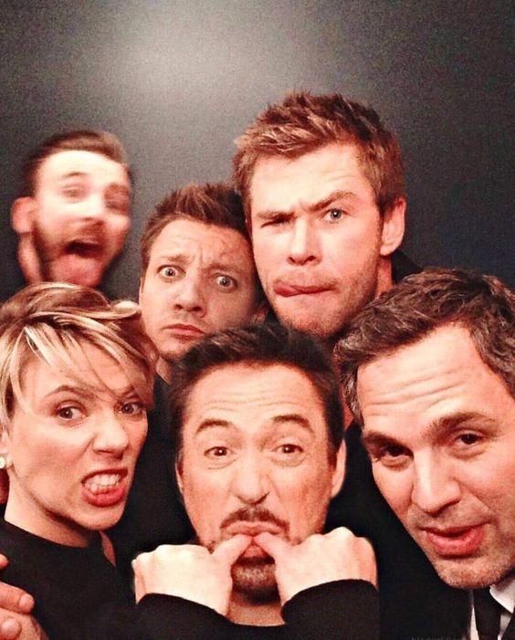
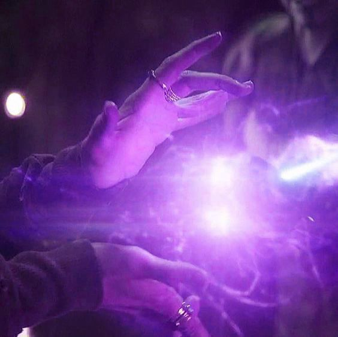
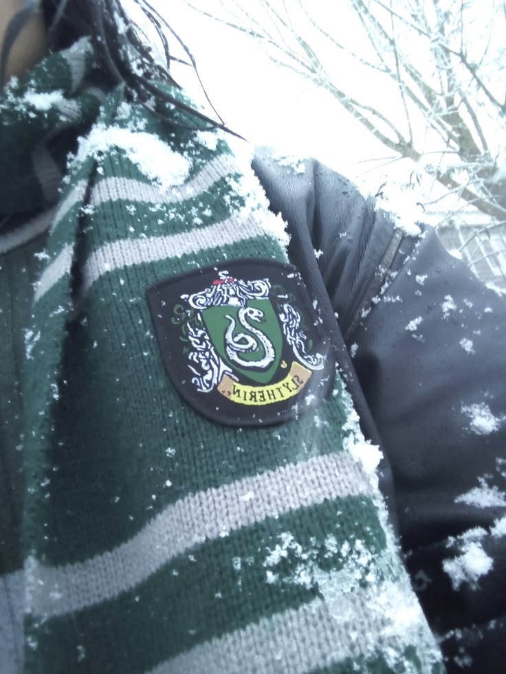

Sobre mim
Oiie, gente!!
Eu sou a Pietra Rodrigues Guimarães (como vocês já sabem), estudante do Ensino Médio. Gosto de aprender, conhecer novas ideias e explorar diferentes áreas, especialmente tecnologia e comunicação. Sou uma pessoa determinada e estou sempre buscando evoluir!!


Interesses pessoais

Bom, eu gosto MUITO de Harry Potter, The Vampire Diaries, DC, Marvel etc! Também gosto muito de ler, escutar música (principalmente Jorge Ben Jor, Marisa Monte, The Neighbourhood e The Weeknd), dançar e cantar.
Curiosidades


- Tenho um osso a mais no pé.
- Tenho 2 irmãos e sou a mais velha entre eles.
- Morro de vontade de praticar alguma arte marcial.
Memórias favoritas


- Quando ganhei meus cachorros (Clara e Yuri).
- Meu aniversário de 15 anos.
- Girls Night com minhas amigas da escola antiga.


Universos que eu participaria
1. Marvel, Vingadores


Seria filha do Tony Stark super viciada em tecnologia, luta e sonhando em fazer uma armadura que nem a do pai (mas ele não deixaria por medo). Bff da Natasha, Thor e Loki e namorada do Steve Rogers (Meu pai ia odiar)!! Eu seria uma vingadora também (óbvio)
2. DC, Justiça Jovem/Batfamília



Faria parte da equipe de Justiça Jovem, melhor amiga do Asa Noturna, do Tim Drake e da Artemis e teria poderes de manipular a realidade, tipo os da Wanda só que roxo.
3. Harry Potter



Eu seria MUITO amiga do pessoal da sonserina, que é a minha casa!! Eu seria amiga de infância do Rony e da Gina, teria uma rivalidade pesadíssima com o Malfoy e iria em todas as festas comunais possíveis. Meu lugar favorito provavelmente seria a biblioteca ou a torre de astronomia!!